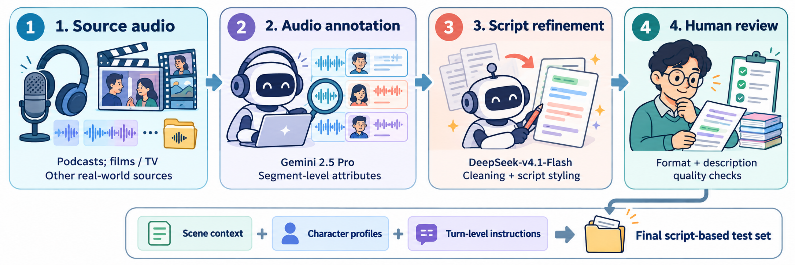
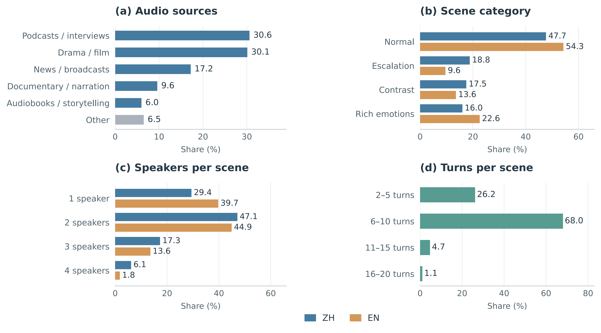

DRAMA-Eval: A Benchmark for Context-Aware, Multi-Turn, Multi-Speaker Speech Generation
Overview
We introduce DRAMA-Eval, a comprehensive benchmark for evaluating context-aware, multi-turn, and multi-speaker speech generation. It utilizes structured script contexts and offers a holistic evaluation framework covering objective, acoustic, local, and global aspects.
Key Contributions
- Comprehensive Dataset: A 12-hour bilingual (ZH-EN) test set of manually corrected real-world scripts paired with ground-truth audio.
- Holistic Protocol: A unified protocol spanning objective metrics (WER/CER, Spk-Sim) and subjective LLM-as-a-Judge assessments (Local B1-B3, Global C1-C3).
- Systematic Benchmarking: Evaluates diverse models, revealing critical weaknesses in long-range speaker consistency and implicit instruction following.
Radar Chart
Multi-Dimensional Capability Comparison
This radar chart visualizes the performance across objective (A1, A2), local (B1-B3), and global (C1-C3) metrics. The A1 WER/CER is inverted (10 - WER) so that a larger area always indicates better overall capability. Select specific models below to compare their strengths and weaknesses side-by-side.
Dataset Construction & Analysis
Figure 1: Dataset Construction Pipeline
Our pipeline begins by sourcing diverse real-world audio (podcasts, films, TV). We use Gemini 2.5 Pro for segment-level attribute annotation, followed by DeepSeek-v4.1-Flash to clean and format the script. Finally, human reviewers ensure format compliance and description quality, resulting in a structured test set with scene context, character profiles, and turn-level instructions.

Figure 2: Dataset Statistics
Distribution of audio sources, scene categories, speaker counts, and turn counts across our dataset. The data covers a wide variety of acoustic and expressive conditions, ensuring robust evaluation of context-aware capabilities.

Dataset Structure (JSON Fields)
The data is hierarchically structured to support context-aware generation. Below are the detailed field descriptions:
utt: The unique identifier for the sample.language: The language of the sample (e.g., "English", "中文").context_background: The Global Context describing the overall scene (e.g., location, atmosphere).character: A dictionary of Character Profiles. Each containstext_info(voice traits) andwav_path(reference audio).content: A list of dialogue turns. Each turn includes:turn_num: Turn index.speaker_info: The speaker of this turn.text: The target text to synthesize.context: The Local Context / Stage Direction describing emotion, pace, and action.audio_assets: Timestamps for the Ground Truth audio slice.
Here is a concrete English example demonstrating the JSON structure:
{
"utt": "0005",
"language": "English",
"eval_type": "Normal",
"context_background": "In a serious, quiet BBC news studio, the environment is dry and echo-free. Two journalists are conducting an in-depth analysis and interview regarding the lobbying scandal in British politics.",
"character": {
"Male_Reporter_Young": {
"text_info": "Young male, clear voice, speaks standard British English, often with thoughtful pauses and repetitions when speaking.",
"wav_path": "/path/to/prompt_audio.wav"
}
},
"content": [
{
"turn_num": 1,
"text": "had been passed from Mandelson to Epstein while he was in Gordon Brown's government.",
"speaker_info": {"speaker_name": "Male_Reporter_Young"},
"context": "He took a deep breath and added key information in an objective, matter-of-fact tone, articulating clearly with a smooth rhythm.",
"audio_assets": {"start_time_ms": 0, "end_time_ms": 5210}
}
]
}Leaderboard
Evaluation Framework: We construct a comprehensive evaluation system combining objective metrics and LLM-as-a-Judge (LALM) assessments. Objective metrics include A1 (WER/CER) and A2 (Spk-Sim). Subjective metrics include local assessments B1 (Instruction), B2 (Prosody), B3 (Expressiveness), and global assessments C1 (Interaction), C2 (Global Flow), C3 (Immersion).
A/B Testing Protocol: For subjective metrics (B1-C3), we adopt an LLM-as-a-Judge A/B preference comparison protocol against the Ground Truth human audio. Scores are reported as Tie-Adjusted Win Rates (AWR), where 50 indicates parity with the human reference. Click on column headers to sort.
Evaluated Models: We systematically benchmark four categories of models: Context-aware multi-speaker models, Single-speaker voice-design models, Single-speaker voice-control models, and Multi-speaker TTS models.
Model Categories Details
- Context-aware multi-speaker: Models designed to handle multi-speaker generation with global context (e.g., SeedAudio, StepAudio 3 Gen).
- Single-speaker voice-design: Models generating speech from text instructions without reference audio (e.g., Qwen3-TTS, MiniMax-H3).
- Single-speaker voice-control: Models generating speech conditioned on reference audio and instructions (e.g., FireRedTTS3, VoxCPM2, MiMo-Audio-7B).
- Multi-speaker TTS: Models generating dialogue conditioned on target texts and reference audio (e.g., MOSS-TTSD, SoulX-Podcast, VibeVoice, FireRedTTS2, Higgs Audio V2).
Metrics Definitions
- A1 (WER/CER ↓): Word/Character Error Rate for textual fidelity.
- A2 (Spk-Sim ↑): Speaker similarity for voice consistency.
- B1 (Instruction ↑): Adherence to the specific local context / stage direction.
- B2 (Prosody ↑): Naturalness of rhythm, phrasing, and absence of artifacts.
- B3 (Expressiveness ↑): Acting depth and dynamic range of the local delivery.
- C1 (Interaction ↑): Turn-taking and pragmatic feedback between speakers.
- C2 (Global Flow ↑): Acoustic continuity and smooth transitions across turns.
- C3 (Immersion ↑): Overall atmosphere and theatrical fidelity of the scene.
Case Study
Deep-dive Audio Comparison
Select a specific sample below. The left panel shows the structured script and Ground Truth audio (scrollable if too long). The right grid displays each model's generated audio and 6 evaluation metrics against the Ground Truth.